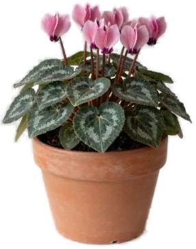

Цикламен
Характер
Клубневое растение из Восточного Средиземноморья: цветет с ноября-декабря до весны, а летом сбрасывает листья и спит. Любит прохладу — в теплой квартире у батареи быстро отцветает. Отцвел и пожелтел — это не смерть, а период покоя клубня: дай ему отдохнуть, и к середине зимы он может зацвести снова (Clemson, Missouri Extension).
Свет
Яркий рассеянный свет (Iowa State, Clemson, Wisconsin). Восточное окно часто подходит, зимой может быть лучше южное (Wisconsin). Missouri Extension: зимой ставь туда, где яркое солнце, в остальное время — ярко, но почти без прямых лучей. Слишком много прямого солнца — ожог листьев (Missouri Botanical Garden). Во время летнего покоя — в тень (Iowa State, Clemson).
Полив
Пока растет и цветет: проверяй грунт, и когда поверхность сухая на ощупь — поливай как следует (Iowa State, Clemson, Wisconsin). Лей по краю горшка или снизу, чтобы вода не попадала на клубень в центре — он гниет (Clemson, Wisconsin, Missouri Extension). Wisconsin советует нижний полив: поставь горшок в воду на 15 минут. Воду бери комнатной температуры (Iowa State). Не доводи до увядания (Missouri Extension): мягкие листья — сигнал полить (Wisconsin). Но перелив губит цикламен чаще всего, особенно если поливать его в покое (Illinois): воду из поддона сливай, декоративную обертку с горшка сними или проделай в ней отверстия. После цветения: листья желтеют и опадают — так он уходит в покой. Сокращай полив постепенно, засохшие листья убери (Iowa State, Missouri Extension). Покой длится 6–8 недель без полива (Missouri Extension, Iowa State), Wisconsin пишет про 2–3 месяца. Illinois и RHS — держи сухим, полив в покое может убить клубень. Clemson советует мягче: не давать грунту пересохнуть полностью. Wisconsin предлагает и вариант хранения: вынуть клубень и держать в сухом вермикулите при ~10 °C 6–12 недель. Будить: Missouri Extension и Iowa State — с середины-конца лета, Clemson — когда в середине сентября пошли новые листья; тогда — на светлое место, полив и подкормки.
Влажность
Во время цветения нужен влажный воздух (Wisconsin, Iowa State): поставь горшок на поддон с мокрым гравием и подальше от теплых потоков воздуха (Wisconsin). RHS говорит об умеренной влажности и предупреждает про горячий сухой воздух и сквозняки. Батарея рядом еще и пересушивает грунт (Clemson). При этом избыток воды плюс плохое проветривание ведут к болезням, обычно смертельным (Illinois).
Температура
Главное — прохлада. Днем 16–18 °C, ночью около 10 °C (Clemson, Wisconsin). Missouri Extension: ночью лучше около 10 °C, допустимо 10–16 °C, днем желательно ниже 21 °C. Iowa State для цветущего — 10–16 °C, Missouri Botanical Garden — около 18 °C. Illinois: днем не выше 20 °C, ночью можно до 4 °C; RHS дает минимум зимой 13–16 °C — нижняя граница у источников расходится. Выше 21 °C бутоны не развиваются (Clemson), в жару молодые бутоны осыпаются (Missouri Extension). В прохладе каждый цветок живет дольше и цветение длиннее (Wisconsin). Мороз не переносит (Wisconsin). В покое — прохладно, 7–10 °C (Iowa State), с середины лета — 10–18 °C (Iowa State).
Грунт и пересадка
Рыхлый грунт с хорошим дренажом (Wisconsin, Missouri Botanical Garden); RHS советует компост на основе суглинка без торфа. Сажай клубень так, чтобы верхушка была чуть выше грунта (Iowa State, RHS), Wisconsin и Missouri Extension — верхняя половина клубня над поверхностью. Пересаживай только в конце покоя и если нужно (Iowa State) — например, если клубень крупный (Missouri Extension). Подкормки в цвету — каждые 2 недели (Iowa State, Wisconsin, RHS) удобрением для цветущих с низким азотом (Wisconsin, RHS); Clemson при подготовке к повторному цветению — раз в месяц. Дозировка — по инструкции на упаковке. Избыток удобрений дает пышную листву, которая легче болеет (Wisconsin).
Какой горшок нужен при пересадке →
Состав грунта: калькулятор смеси →
Размножение
Дома — честно сложно. Из семян медленно и неравномерно: до цветения 9–15 месяцев (Clemson), Missouri Botanical Garden пишет около 18 месяцев от посева в конце лета. RHS: сей свежие семена в темноте при 12–15 °C, замачивание на 10 часов перед посевом помогает. Делить клубень плохая идея: срезы подсыхают и гниют (Clemson). Clemson советует просто купить новое растение.
Частые беды
- Пожелтели и опадают листья весной-летом — норма: клубень уходит в покой (Illinois, Clemson, Wisconsin) — не выбрасывай
- Желтеют листья в сезон цветения — грунт слишком мокрый или слишком сухой, жара и сухость, мало света (Wisconsin)
- Опадают бутоны и цветы — жара выше 21 °C, сухой воздух, мало света (Wisconsin, Clemson, Missouri Extension), горячие или холодные сквозняки (Illinois)
- Мягкий клубень, поникшие стебли, гниль — перелив или вода на клубень (Clemson, Wisconsin, Illinois); Missouri Botanical Garden и RHS называют корневые гнили
- Серый пушистый налет — серая гниль (RHS, Missouri Botanical Garden): сырость без проветривания
- Молодые листья мелкие, скрученные, деформированные — цикламеновый клещ (Missouri Extension, Missouri Botanical Garden) — такое растение лучше выбросить, бороться почти бесполезно (Clemson, Wisconsin)
- Вредители — тля, мучнистый червец, паутинный клещ, трипсы (Clemson, Wisconsin); в контейнерах — долгоносик (RHS)
Подробные разборы:
Интересно
- Название рода — от греческого слова «круг», из-за круглых клубней; persicum значит «персидский» (Missouri Botanical Garden).
- В Западную Европу Cyclamen persicum попал в начале XVII века (Clemson). Селекция на крупные цветки началась в середине XIX века в Англии и Нидерландах, а в 1960-х в Wye College вывели мелкие душистые гибриды (Illinois).
- Клубень в горшке дорастает до 15 см в диаметре, а одно растение может цвести до трех месяцев (Wisconsin).
- Летний покой цикламена называют эстивацией — от латинского «летний сон» (Illinois).
Цикламен и кошки
Ядовито
По базе ASPCA (карточка Cyclamen, Cyclamen spp., семейство Primulaceae) ядовит для кошек, собак и лошадей. Признаки: слюнотечение, рвота, диарея; если съедено много клубней — нарушения сердечного ритма, судороги, возможна гибель. Убери повыше, клубни при пересадке и в покое не оставляй в доступе. При симптомах — сразу к ветеринару.
Источники
Факты взяты из справочников университетских служб, RHS и базы ASPCA. Где источники расходятся, мы так и пишем.